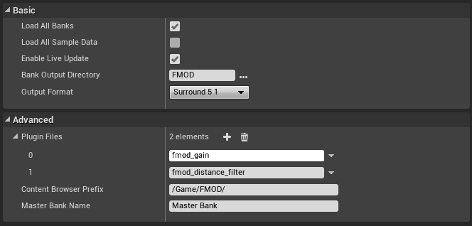

Unreal Integration 2.02
FMOD Studio projects can be set up to use third party plugins. These can include custom DSP effects that are created in-house or commercial products that can be used with FMOD Studio.
The plugins must be loaded at runtime so that they are there when loading the banks that need them. Plugins are set up in the project settings Advanced section.

Each entry should be the filename of the plugin, without any extension. Any plugin files required should be added to the FMODStudio/Binaries/Platform/ directory.
For example, to use fmod_gain.dll on Win64 builds, you should add the file here:
FMODStudio/Binaries/Win64/fmod_gain.dll
You will need to make sure the plugins are deployed as well. Unreal deployment doesn't have access to the settings information so you will need to create an extra file that lists the plugins you want to deploy.
Create a file "plugins.txt" in the FMODStudio/Binaries/Platform/ directory. The text file should contain the plugin names (just the name without file extension).
For example, to deploy fmod_gain.dll on Win64 builds, create a file FMODStudio/Binaries/Win64/plugins.txt with the following contents:
fmod_gain
Check the Platform Specifics for information relating to plugins on specific platforms.